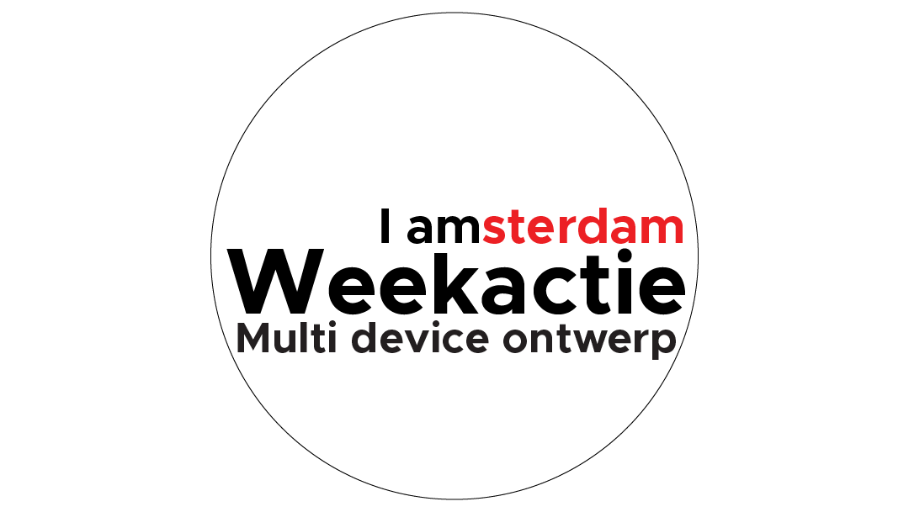

About
I'm a multimedia designer. Because of this, my portfolio is filled with projects from different categories; Design, Webdesign (WD), Product Design (PD) Immersive Design (ID) and Art.
I'm a multimedia designer. Because of this, my portfolio is filled with projects from different categories; Design, Webdesign (WD), Product Design (PD) Immersive Design (ID) and Art.
In this portfolio I've also added some of my experiments and learning processes, to show things that I've been trying out and/or working on. These show an extra array of skills I've picked up over the years.
As my final project for the minor Immersive Environments, we created something for the new Oger 2.0.
Read moreI took a dive into the world of Touchdesigner as part of my personal project for the minor Immersive Environments.
Read more
During my study I did a minor on Immersive Environments for half a year. This is what I learned.
Read moreI did the webdesign and visual design for their website. Respectfarms is producing in lab created meats.
Read moreI created a motiontracking setup tutorial for a 3D course at the University of Applied Sciences Amsterdam
Read moreDuring my third year I worked to better the Minor Selector from the University of Applied Sciences Amsterdam.
Read moreDuring my 1/4 year internship at CGI I worked on an online portal for KPN.
Read more
During this class I recreated the Blender.org website from scratch.
Read moreDuring this project I learned more about Visual Design in the form of posters, animations and more.
Read moreDuring this class I learned more about how to tell stories through my work.
Read moreDuring this project we created a multimedia product that could help solve a problem without a screen.
Read moreDuring this class I created a multi device design for an event and a lyrics video for a song of choice.
Read more During this project I got the chance to develop a skill of my own choosing, which was 3D.
Read moreDuring this class we created an app-design for an event. The event I worked on was Rollende Keukens.
Read moreDuring this class I created a design for an app for a school library built around a fantasy theme.
Read moreDuring this class I did a redesign of the experience for the theater Carré.
Read moreDuring this class I created a promotional website for a North Face item.
Read more